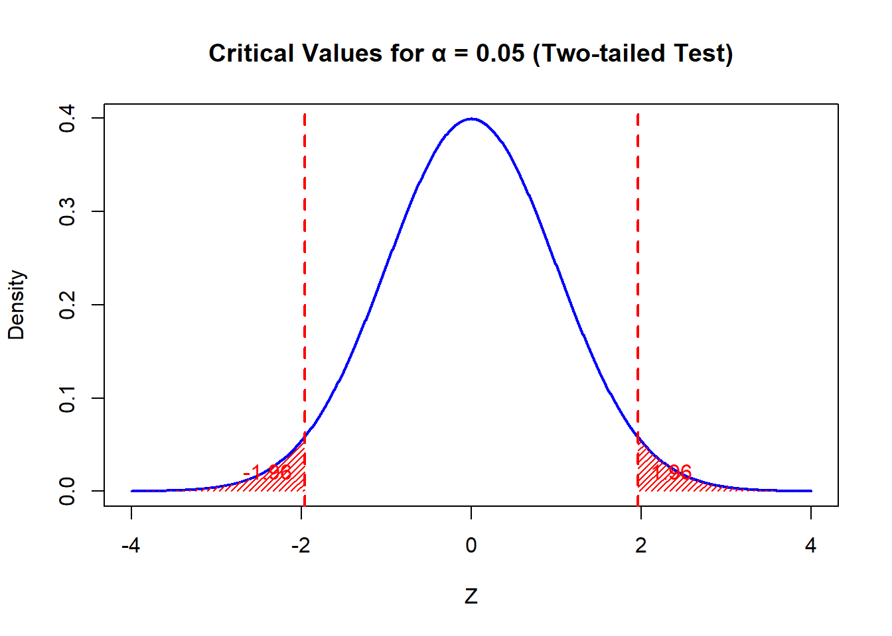
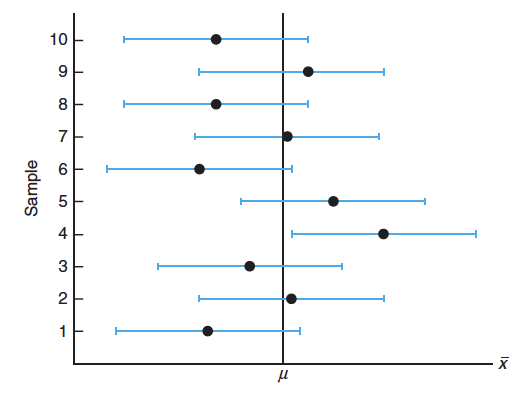
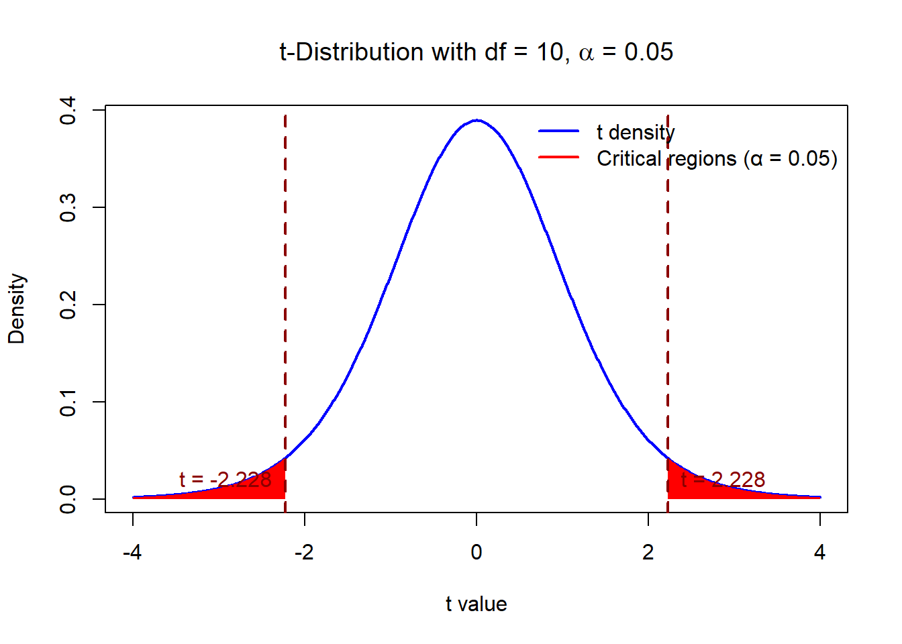
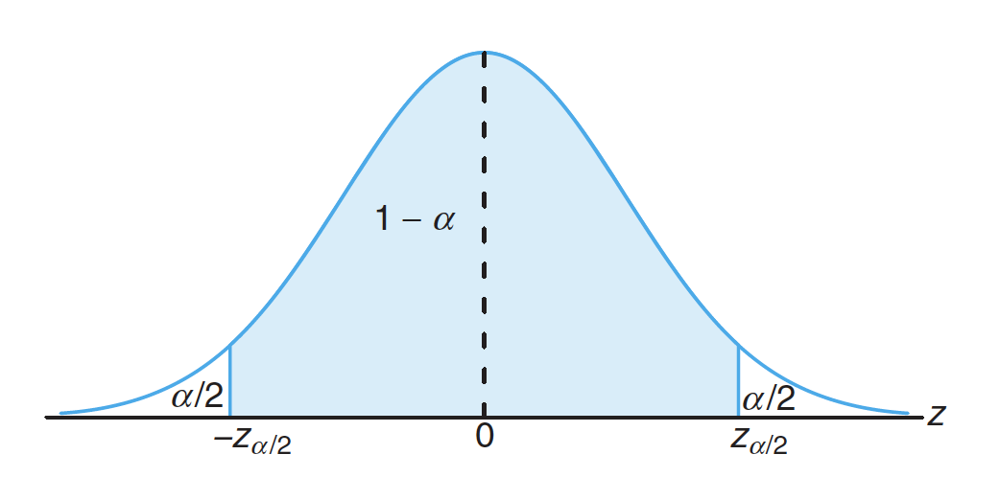
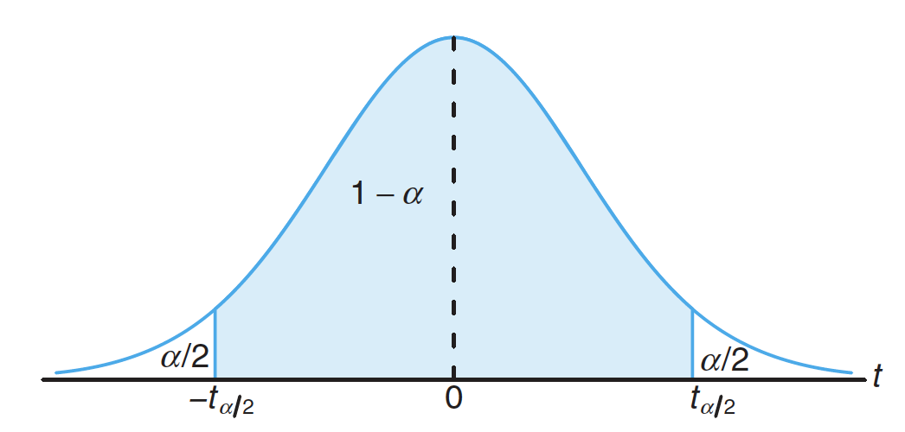

Week 6: Statistical Inference I: Estimation on Mean(s)
References
- Probability & Statistics for Engineers & Scientist, 9th Edition, Ronald E. Walpole, Raymond H. Myers, Sharon L. Myers, Keying Ye, Prentice Hall
Objectives
Understand the reasons why we use interval estimate instead of point estimate
Know how to use R to construct a confidence interval(CI) on Mean and Difference of Two Means
Understand when to use
t.testto construct CI for Mean and Difference of Two Means
Review Central Limit Theorem (CLT)
Let \(\bar{X}\) be the mean of a random sample of size \(n\) taken from a population with mean \(\mu\) and finite variance \(\sigma^2\), then the limiting form of the distribution of \[Z = \frac{\bar{X} -\mu}{\sigma/\sqrt{n}},\] as \(n\rightarrow \infty\), is the standard normal distribution, i.e., \(Z \sim \mathcal{N}(0,1)\).
This tells us sample mean \(\bar{X}\) should be a good estimate of population mean \(\mu\), when sample size large enough. However, it is not good enough to estimate \(\mu\) just by one point \(\bar{X}\). We want to use an interval to estimate \(\mu\).
Interval Estimate
An interval estimate of a population parameter \(\theta\) is an interval of the form \(\theta_{L} < \theta < \theta_{U}.\)
For example, a random sample of SAT verbal scores for students in the entering freshman class might produce an interval from 530 to 550, within which we expect to find the true average of all SAT verbal scores for the freshman class.
Question: How to choose \(\theta_{L}\) and \(\theta_{U}\)?
If we find \(\theta_{L}\) and \(\theta_{U}\) such that \[ P(\theta_{L} < \theta < \theta_{U}) = 1- \alpha,\] where \(0 < \alpha < 1,\) the interval \((\theta_{L} , \theta_{U})\) is called a \(100(1-\alpha)\%\) confidence interval, the fraction \(1-\alpha\) is called the confidence coefficient, and \(\theta_{L}\) and \(\theta_{U}\) are called the lower and upper confidence limits.
Confidence Interval on \(\mu\) when \(\sigma\) known
As we know \[ Z = \frac{\bar{X}-\mu}{\sigma/\sqrt{n}} \sim \mathcal{N}(0,1), \] suppose \(z_{\alpha/2}\) denote the value such that \[P(-z_{\alpha/2} < Z <z_{\alpha/2}) = 1- \alpha\] as the following figure, where \(\alpha =0.05\).
We can have \[P(-z_{\alpha/2} < \frac{\bar{X}-\mu}{\sigma/\sqrt{n}} <z_{\alpha/2}) = P(-\frac{\sigma}{\sqrt{n} }z_{\alpha/2} < \bar{X}-\mu< \frac{\sigma}{\sqrt{n} }z_{\alpha/2}) = P(\bar{X} -\frac{\sigma}{\sqrt{n} }z_{\alpha/2} < \mu< \bar{X} +\frac{\sigma}{\sqrt{n} }z_{\alpha/2}) =1- \alpha.\] That is the interval \((\bar{X} -\frac{\sigma}{\sqrt{n} }z_{\alpha/2}, \bar{X} +\frac{\sigma}{\sqrt{n} }z_{\alpha/2})\) is an interval estimate of \(\mu\) with confidence \(100(1-\alpha)\%.\) Actually the confidence is the probability.
Suppose confidence is 95%, we know \(\alpha = 1-95\% = 0.05\), that is \(\alpha/2 = 0.025\). How to find \(z_{\alpha/2}\)?
alpha <- 0.05
z_0.025 <- qnorm(1-alpha/2) # why?
z_0.025[1] 1.959964p<-pnorm(z_0.025) - pnorm(-z_0.025)
p[1] 0.95Different samples will yield different values of \(\bar{x}\) and therefore produce different interval estimates of the parameter \(\mu\), as shown below.

Can you construct a 99% confidence interval for \(\mu\)?
Example 1 The average zinc concentration recovered from a sample of measurements taken in 36 different locations in a river is found to be 2.6 grams per milliliter. Find the 95% and 99% confidence intervals for the mean zinc concentration in the river. Assume that the population standard deviation is 0.3 gram per milliliter.
n <- 36 #sample size
xbar <- 2.6 #sample mean
sigma <- 0.3 #population sd
alpha1 <- 0.05
#Left endpoint for confidence 95%
lend1 <- xbar - sigma/sqrt(n)*qnorm(1-alpha1/2)
#Right endpoint for confidence 95%
rend1 <- xbar + sigma/sqrt(n)*qnorm(1-alpha1/2)
alpha2 <- 0.01
#Left endpoint for confidence 99%
lend2 <- xbar - sigma/sqrt(n)*qnorm(1-alpha2/2)
#Right endpoint for confidence 99%
rend2 <- xbar + sigma/sqrt(n)*qnorm(1-alpha2/2)The \(95\%\) confidence interval is (2.5020018, 2.6979982). The \(99\%\) confidence interval is (2.4712085, 2.7287915).
Question: Suppose some evidence shows the mean zinc concentration in the river (\(\mu\)) should be \(2.5\). Does that make sense?
As we know \(\bar{X} \sim \mathcal{N}(\mu, \sigma^2/n),\) let’s find the probability \(\bar{X} \ge 2.6\).
p1<-1- pnorm(xbar,mean = 2.5, sd = sigma/sqrt(n))
p1[1] 0.02275013Actually, this is one way to do the hypothesis testing. We will talk about that later.
In-class Exercise: CI on mean
A manufacturer of sports equipment has developed a new synthetic fishing line with a standard deviation of 0.5 kilogram. If a random sample of 50 lines is tested and found to have a mean breaking strength of 7.8 kilograms, can you construct a \(99\%\) confidence interval.
If we don’t know \(\sigma\)
If the population follows normal distribution or approximately normal distribution, we can use \(t-\)distribution.
If we have a random sample from a normal distribution, then the random variable \[T = \frac{\bar{X}-\mu}{S/\sqrt{n}}\] has a Student \(t\)-distribution with \(n-1\) degrees of freedom. Here \(S\) is the sample standard deviation.
Let \(\alpha = 0.05, n-1 =10\).

Confidence Interval on \(\mu\) when \(\sigma^2\) unknown
If \(\bar{x}\) and \(s\) are the mean and the standard deviation of a random sample of size \(n\) from a distribution with unknown variance \(\sigma^2\), a \(100(1-\alpha)\%\) confidence interval for \(\mu\) is given by \[\bar{x} - t_{n-1,\alpha/2}\frac{S}{\sqrt{n}} < \mu < \bar{x} + t_{n-1,\alpha/2}\frac{S}{\sqrt{n}},\] where \(t_{n-1,\alpha/2}\) is the \(t-\)value with \(v =n-1\) degrees of freedom, leaving an area of \(\alpha/2\) to the right.
Example 2 The contents of seven similar containers of sulfuric acid are 9.8, 10.2, 10.4, 9.8, 10.0, 10.2, and 9.6 liters. Find a 95% confidence interval for the mean contents of all such containers, assuming an approximately normal distribution.
sulfruicAcid<-c(9.8,10.2,10.4,9.8,10.0,10.2,9.6)
xbar <- mean(sulfruicAcid)
s <-sd(sulfruicAcid)
n <- 7
alpha <- 0.05
t6_0.025<- qt(1-alpha/2,n-1)
lowerBound <- xbar-t6_0.025*s/sqrt(n)
lowerBound[1] 9.738414upperBound <- xbar+t6_0.025*s/sqrt(n)
upperBound[1] 10.26159A different way to get confidence interval
t.test(sulfruicAcid, conf.level = .95)
One Sample t-test
data: sulfruicAcid
t = 93.541, df = 6, p-value = 1.006e-10
alternative hypothesis: true mean is not equal to 0
95 percent confidence interval:
9.738414 10.261586
sample estimates:
mean of x
10 In-class Exercise: CI on \(\mu\) with unknown variance
Regular consumption of presweetened cereals contributes to tooth decay, heart disease, and other degenerative diseases, according to studies conducted by Dr. W. H. Bowen of the National Institute of Health and Dr. J. Yudben, Professor of Nutrition and Dietetics at the University of London. In a random sample consisting of 20 similar single servings of Alpha-Bits, the average sugar content was 11.3 grams with a standard deviation of 2.45 grams. Assuming that the sugar contents are normally distributed, construct a 95% confidence interval for the mean sugar content for single servings of Alpha-Bits.
Please construct a 95% confidence interval for the mean of
Sepal.Lengthin theirisdata set, assume the normal distribution.
Check Point Questions:
Quick Check: Confidence Intervals for a Population Mean
This short practice is not graded. Select an answer to receive immediate feedback.
1. To find a confidence interval for a population mean when the population variance is known, which of the following should we use?
Suppose \(X_1,\ldots,X_{100}\) is a random sample of size 100 from an unknown distribution.
2. To find a confidence interval for a population mean when the population variance is unknown, which of the following should we use?
Suppose \(X_1,\ldots,X_{20}\) is a random sample of size 20 from an unknown distribution.
Quick Check: Matching Statistical Terms
Match each description with the appropriate term by dragging the terms into the boxes.
Population
Sample
Descriptive statistic
Parameter
Inferential statistic
a. All home compost bins in Galicia, Spain
b. The 87 randomly selected home compost bins
c. The sample mean moisture content, \(\bar{x}=68.1\%\)
d. The mean moisture content for all compost similarly produced by home compost bins in Galicia, Spain, \(\mu\)
e. The 95% confidence interval for the population mean moisture content, \((66.1\%,70.1\%)\)
Estimating the Difference between Two Means
Next, we want to investigate two populations with means \(\mu_1\) and \(\mu_2\) and variances \(\sigma_1^2\) and \(\sigma_2^2\), respectively. Thus we can have a point estimator of the difference between \(\mu_1\) and \(\mu_2\) is given by the statistic \(\bar{x}_1-\bar{x}_2\).
Confidence Interval on \(\mu_1-\mu_2\) when \(\sigma_1^2\) and \(\sigma_2^2\) known
If \(\bar{x}_1\) and \(\bar{x}_2\) are the means of independent random samples of sizes \(n_1\) and \(n_2\) from populations with known variances \(\sigma_1^2\) and \(\sigma_2^2\), respectively,
a \(100(1-\alpha)\%\) confidence interval for \(\mu_1-\mu_2\) is given by \[ (\bar{x}_1-\bar{x}_2) - z_{\alpha/2}\sqrt{\frac{\sigma^2_1}{n_1} +\frac{\sigma^2_2}{n_2}}< \mu_1-\mu_2 < (\bar{x}_1-\bar{x}_2) + z_{\alpha/2}\sqrt{\frac{\sigma^2_1}{n_1} +\frac{\sigma^2_2}{n_2}},\] where \(z_{\alpha/2}\) is the \(z-\)value leaving an area of \(\alpha/2\) to the right.
Example 3 A study was conducted in which two types of engines, \(A\) and \(B,\) were compared. Gas mileage, in miles per gallon, was measured. Fifty experiments were conducted using engine type \(A\) and 75 experiments were done with engine type \(B.\) The gasoline used and other conditions were held constant. The average gas mileage was 36 miles per gallon for engine \(A\) and 42 miles per gallon for engine \(B\). Find a 96% confidence interval on \(\mu_B - \mu_A,\) where \(\mu_A\) and \(\mu_B\) are population mean gas mileages for engines \(A\) and \(B,\) respectively. Assume that the population standard deviations are 6 and 8 for engines \(A\) and \(B,\) respectively.
alpha <- 0.04
n1 <- 50
x1bar <- 36
n2 <- 75
x2bar <- 42
sigma1 <- 6
sigma2 <- 8
standerror <- sqrt(sigma1^2 /n1 + sigma2^2/n2)
lowerBound <- x2bar-x1bar - qnorm(1-alpha/2)*standerror
lowerBound[1] 3.42393upperBound <- x2bar-x1bar + qnorm(1-alpha/2)*standerror
upperBound[1] 8.57607In-class Exercise: CI on \(\mu_1-\mu_2\) with known \(\sigma_1\) and \(\sigma_2\)
Generate 50 normal random numbers with \(\mu_1 = 3\) and \(\sigma_1 = 3\) and get the sample mean \(\bar{x}_1\). Hint:
rnormGenerate 75 normal random numbers with \(\mu_2 = 2\) and \(\sigma_2 = 4\) and get the sample mean \(\bar{x}_2\)
Please construct a 95% confidence interval on \(\mu_1-\mu_2\).
Question: If we don’t know the variances, what should we do?
Confidence Interval on \(\mu_1-\mu_2\) when \(\sigma_1^2 = \sigma_2^2\) but Both Unknown
If \(\bar{x}_1\) and \(\bar{x}_2\) are the means of independent random samples of sizes \(n_1\) and \(n_2\), respectively, from with ,
a \(100(1-\alpha)\%\) cofidence interval for \(\mu_1-\mu_2\) is given by \[ (\bar{x}_1-\bar{x}_2) - t_{n_1+n_2-2,\alpha/2}s_p\sqrt{\frac{1}{n_1} +\frac{1}{n_2}}< \mu_1-\mu_2 < (\bar{x}_1-\bar{x}_2) + t_{n_1+n_2-2,\alpha/2}s_p\sqrt{\frac{1}{n_1} +\frac{1}{n_2}},\] where \[s_p^2 = \frac{(n_1-1)S_1^2 +(n_2-1)S_2^2 }{n_1+n_2-2}\] is the pooled estimater of the population standard deviation and \(t_{n_1+n_2-2,\alpha/2}\) is the \(t-\)value with \(v =n_1+n_2-2\) degrees of freedom, leaving an area of \(\alpha/2\) to the right.
Example 4 In a study conducted at Virginia Tech on the development of ectomycorrhizal, a symbiotic relationship between the roots of trees and a fungus, in which minerals are transferred from the fungus to the trees and sugars from the trees to the fungus, 20 northern red oak seedlings exposed to the fungus Pisolithus tinctorus were grown in a greenhouse. All seedlings were planted in the same type of soil and received the same amount of sunshine and water. Half received no nitrogen at planting time, to serve as a control, and the other half received 368 ppm of nitrogen in the form NaNO3. The stem weights, in grams, at the end of 140 days were recorded as follows:
No Nitrogen: 0.32 0.53 0.28 0.37 0.47 0.43 0.36 0.42 0.38 0.43
Nitrogen: 0.26 0.43 0.47 0.49 0.52 0.75 0.79 0.86 0.62 0.46
Construct a 95% confidence interval for the difference in the mean stem weight between seedlings that receive no nitrogen and those that receive 368 ppm of nitrogen. Assume the populations to be normally distributed with equal variances.
noNitro<- c(0.32,0.53 ,0.28, 0.37, 0.47, 0.43, 0.36, 0.42,0.38,0.43)
x1bar <- mean(noNitro)
s1 <- sd(noNitro)
n1 <- 10
Nitro<- c(0.26,0.43,0.47,0.49,0.52,0.75,0.79,0.86, 0.62,0.46)
x2bar <- mean(Nitro)
s2<- sd(Nitro)
n2<- 10
sp<- sqrt(((n1-1)*s1^2 + (n2-1)*s2^2)/(n1+n2-2))
alpha <- 0.05
loBound<- x1bar-x2bar - qt(1-alpha/2,n1+n2-2)*sp*sqrt(1/n1+1/n2)
loBound[1] -0.2991579upBound<-x1bar-x2bar + qt(1-alpha/2,n1+n2-2)*sp*sqrt(1/n1+1/n2)
upBound[1] -0.03284212Can we use t.test? Yes!
We can use two sample t-test. Don’t forget to add the condition var.equal = TURE.
t.test(noNitro,Nitro, var.equal = TRUE, conf.level = .95)
Two Sample t-test
data: noNitro and Nitro
t = -2.6191, df = 18, p-value = 0.01739
alternative hypothesis: true difference in means is not equal to 0
95 percent confidence interval:
-0.29915788 -0.03284212
sample estimates:
mean of x mean of y
0.399 0.565 # Construct a data frame with two columns
stemWeight<-c(0.32,0.53 ,0.28, 0.37, 0.47, 0.43, 0.36, 0.42,0.38,0.43,0.26,0.43,0.47,0.49,0.52,0.75,0.79,0.86, 0.62,0.46)
group<-c(rep(0,10),rep(1,10))
stemData<-data.frame(stemWeight,group)
stemData stemWeight group
1 0.32 0
2 0.53 0
3 0.28 0
4 0.37 0
5 0.47 0
6 0.43 0
7 0.36 0
8 0.42 0
9 0.38 0
10 0.43 0
11 0.26 1
12 0.43 1
13 0.47 1
14 0.49 1
15 0.52 1
16 0.75 1
17 0.79 1
18 0.86 1
19 0.62 1
20 0.46 1t.test(stemWeight~group, data = stemData,var.equal = TRUE, conf.level = .95)
Two Sample t-test
data: stemWeight by group
t = -2.6191, df = 18, p-value = 0.01739
alternative hypothesis: true difference in means between group 0 and group 1 is not equal to 0
95 percent confidence interval:
-0.29915788 -0.03284212
sample estimates:
mean in group 0 mean in group 1
0.399 0.565 Note: If the population variances are unknow but different, you still can use t.test to construct the confidence interval on \(\mu_1-\mu_2\) with var.equal = FALSE. In this case, the degree of freedoms is no longer an integer.
t.test(noNitro,Nitro, var.equal = FALSE, conf.level = .95)
Welch Two Sample t-test
data: noNitro and Nitro
t = -2.6191, df = 11.673, p-value = 0.02286
alternative hypothesis: true difference in means is not equal to 0
95 percent confidence interval:
-0.30452438 -0.02747562
sample estimates:
mean of x mean of y
0.399 0.565 # Or you can use
t.test(stemWeight~group, data = stemData,var.equal = FALSE, conf.level = .95)
Welch Two Sample t-test
data: stemWeight by group
t = -2.6191, df = 11.673, p-value = 0.02286
alternative hypothesis: true difference in means between group 0 and group 1 is not equal to 0
95 percent confidence interval:
-0.30452438 -0.02747562
sample estimates:
mean in group 0 mean in group 1
0.399 0.565 In-class Exercise A: CI on \(\mu_1-\mu_2\) with unknown \(\sigma_1 = \sigma_2\)
Let’s play with iris data set. We want to compare the population mean of Sepal.Length between Setosa and Virginica. Suppose we know these two species come from the normal distribution with the same variance. Can you construct a confidence interval on \(\mu_{virginica}-\mu_{setosa}\) with 95% confidence?
In-class Exercise B: CI on \(\mu_1-\mu_2\) with unknown \(\sigma_1 \ne \sigma_2\)
Let’s play with iris data set. We want to compare the population mean of Sepal.Length between Setosa and Virginica. Suppose we know these two species come from the normal distribution with different variances. Can you construct a confidence interval on \(\mu_{virginica}-\mu_{setosa}\) with 95% confidence?
Question: How to choose var.equal = TRUE or var.equal = FALSE?
We can do a hypothesis testing for variance. We will talk about it in the future lectures.
Conclusion:
Confidence Interval on \(\mu\)
- When \(\sigma^2\) Known
Suppose \(z_{\alpha/2}\) denote the value such that \[P(-z_{\alpha/2} < \frac{\bar{X}-\mu}{\sigma/\sqrt{n}} <z_{\alpha/2}) = 1- \alpha.\]

If \(\bar{x}\) is the mean of a random sample of size \(n\) from a population with known variance \(\sigma^2\), a \(100(1-\alpha)\%\) confidence interval for \(\mu\) is given by \[ \bar{x} - z_{\alpha/2} \frac{\sigma}{\sqrt{n}} < \mu < \bar{x} + z_{\alpha/2} \frac{\sigma}{\sqrt{n}},\] where \(z_{\alpha/2}\) is the z-value leaving an area of \(\alpha/2\) to the right, which can be founded by qnorm(1-alpha/2).
- When \(\sigma^2\) Unknown
If the population follows normal distribution or approximately normal distribution, we can use \(t-\)distribution. Suppose \(t_{\alpha/2}\) denote the value such that \[P(-t_{\alpha/2} < \frac{\bar{X}-\mu}{s/\sqrt{n}} <t_{\alpha/2}) = 1- \alpha.\]

If \(\bar{x}\) and \(s\) are the mean and the standard deviation of a random sample of size \(n\) from a distribution with unknown variance \(\sigma^2\), a \(100(1-\alpha)\%\) confidence interval for \(\mu\) is given by \[ \bar{x} - t_{\alpha/2}\frac{s}{\sqrt{n}} < \mu < \bar{x} + t_{\alpha/2}\frac{s}{\sqrt{n}},\] where \(t_{\alpha/2}\) is the \(t-\)value with \(v =n-1\) degrees of freedom, leaving an area of \(\alpha/2\) to the right, which can be founded by qt(1-alpha/2,v). You can also use t.test to find the confidence interval, if the data is given.
Confidence Interval on \(\mu_1-\mu_2\)
- When \(\sigma_1^2\) and \(\sigma_2^2\) known
If \(\bar{x}_1\) and \(\bar{x}_2\) are the means of independent random samples of sizes \(n_1\) and \(n_2\) from populations with known variances \(\sigma_1^2\) and \(\sigma_2^2\), respectively,
a \(100(1-\alpha)\%\) confidence interval for \(\mu_1-\mu_2\) is given by \[ (\bar{x}_1-\bar{x}_2) - z_{\alpha/2}\sqrt{\frac{\sigma^2_1}{n_1} +\frac{\sigma^2_2}{n_2}}< \mu_1-\mu_2 < (\bar{x}_1-\bar{x}_2) + z_{\alpha/2}\sqrt{\frac{\sigma^2_1}{n_1} +\frac{\sigma^2_2}{n_2}},\] where \(z_{\alpha/2}\) is the \(z-\)value leaving an area of \(\alpha/2\) to the right, which can be founded by qnorm(1-alpha/2).
- When \(\sigma_1^2\) and \(\sigma_2^2\) Unknown
You can use t.test to find the confidence interval, if the data is given. Please choose the approporiate condition for var.equal.